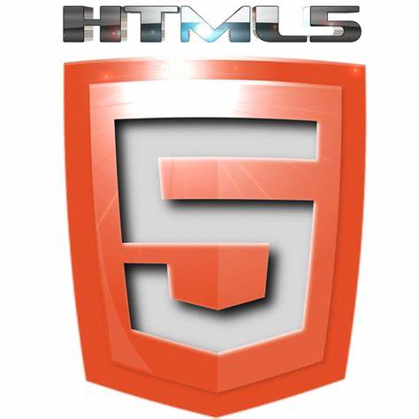
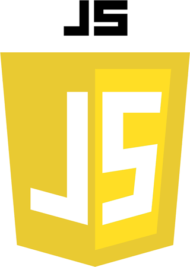
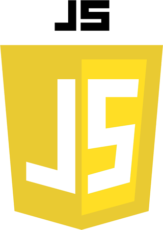
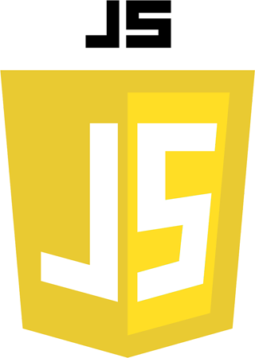
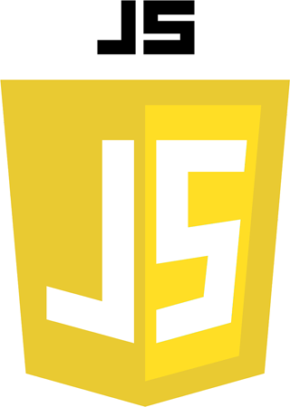

 



Let me tell you a little about myself and what I do...
I well learn all of skills that I need to bild your website in profitional way
Jag blir en av best elever som kan HTML
The best in CSS also och den är mycket miningsfull för att bygga hemsidan
Jag har lärt mig lite tills nu från youtube och hjälp av min bror

boocks that I read now...
Flera bomber har sprängts i Stockholm. När en bomb sprängs på Strandvägen, i en av Sveriges dyraste bostadsrättsföreningar, och dödar flera människor, däribland barn, kallar statsminister Sten Lovén in till krismöte. Han vill att alla resurser ska sättas in för att bekämpa bombdåden i landet. Han ger chefen för militära SSI, Göran Filipson, uppdraget att diskret undersöka saken eftersom oroligheterna i landet nu rör rikets säkerhet.
Det är midsommarhelg och hela staden är avspärrad. En från början fredlig demonstration mot polisens sätt att tillämpa en ny terroristlagstiftning den så kallade Nationalsäkerhetslagen har urartat.Johanna hinner precis rädda sin 15-åriga dotter undan det kaos som utbryter när poliserna drar sina vapen. Men alla har inte samma tur. När tårgasens dimmor lättar har flera personer skjutits till döds av ordningsmakten. Johanna konfronterar generaldirektören för Säpo. Och strax därefter blir hon utsatt för ett attentatsförsök.
En höstmorgon 2018 står den bara där, i Norrtäljes hamn. Ingen vet hur den har kommit dit. När den så småningom öppnas kommer dess innehåll att förvandla Norrtälje. Den vardagliga vänligheten börjar att vittra bort. Under denna förändringens tid får vi följa sex personer runt 30 år som även de är stadda i omvandling. Max och Johan spelar minigolf och Pokémon Go och undrar när det verkliga livet ska börja. Siw och Anna går på gym för att bli av med sin övervikt. Marko och Maria flydde från Bosnien som små och har tillsynes lyckats väl i livet.
Det är strax före millennieskiftet och Stella arbetar på ett äldreboende sedan fyra år tillbaka. Hon trivs på sitt jobb och med sina kollegor, men därhemma finns den kontrollerande pojkvännen Samuel som håller Stella i ett järngrepp. Till slut passerar Samuel en gräns som får Stella att inse att hon, för att rädda sitt eget liv, måste lämna honom. När Stella får veta att Maj, en av hennes gamla vårdtagare, har testamenterat sin stora våning på Söder till Stella ser hon sin chans att äntligen bli fri från Samuel. Men är det verkligen så enkelt?